Pixel Grid Designer
A field trial is read by a satellite through pixels that are larger and blurrier than they look. This page says how the designer decides which pixels belong to one plot only, and what every figure it shows means. Six examples put real questions to it, from a variety trial for Sentinel-2 to a trial read from a file.
The three steps
- Experiment area. Find a place, then draw a box or trace the field's shape on the map. ★ Set as default field pins the field: Reset returns to it.
- Simulate experiment. Six folds, one open at a time: Satellite, Design, Suggest a design, Plot size required, Growth curves, Noise & purity threshold. The titles of the Satellite, Design, Growth curves and Noise folds say what they hold while they are shut. Suggest a design is not offered for a trial read from a file.
- Pixel purity. The simulated pixels as a chart, and the same trial read by every satellite of the list.
A design can be typed, or a trial built with Suggest a design, before any area is drawn: the build makes an area around the trial.
Everything is computed in the browser. The header's Reset clears the field and every setting. The page then opens on the pinned field, or with none pinned on its example field.
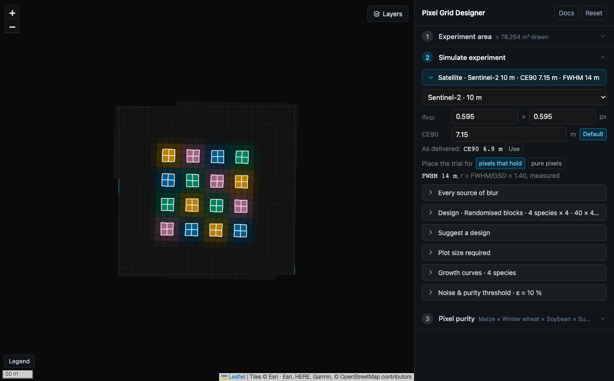
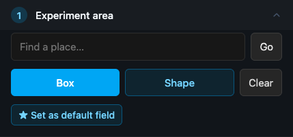
The map and its layers
The map shows the trial as the satellite sees it: each pixel in the blend of what it sees. The Layers button holds the basemap (Dark, Satellite, Topo, Streets) and five switches.
- Real field
- The trial as it is planted, under the pixel grid, in place of the pixels as the satellite sees them.
- In field only
- Only the pixels that overlap the field.
- σ PSF, geo, eff
- Three rings of one σ, to scale: the blur, the geolocation error and the two combined. The two broken circles hold 90 % of a pixel's signal: without the geolocation error (2.146 σPSF) and with it (2.146 σeff). With a CE90 of 0 only the blur is drawn, and a blur that differs along x and y gives ellipses. Click a pixel to move them there.
- Signal of a pixel
- A pixel's signal as 1000 dots, one dot for 0.1 % of it. A dot's colour says whose ground it lands on, not what grows there: green for the plot the purity is counted on, another colour for each other plot, one for bare soil and one for the ground outside the trial. The card lists the share of each, six lines at most. Its first line is the pixel's purity, and the mark on its bar is the threshold the purity must reach. Click a pixel to move them there.
- Pure pixels
- Pure pixels outlined, the others under a dark veil. With a geolocation error there are three levels: a solid outline for a pixel that holds within the CE90, a broken outline and half the veil for a pixel that is pure only with the image exactly in place, the whole veil for the rest.
For a satellite with a fixed grid, the grid drawn is the real one. For a tasked satellite it is one possible grid: see Fixed grid or tasked.
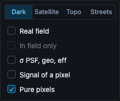
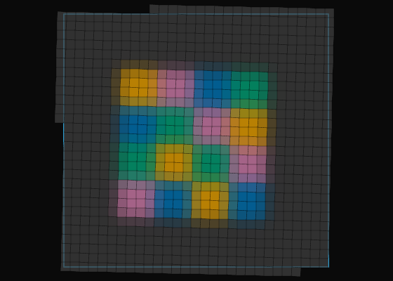
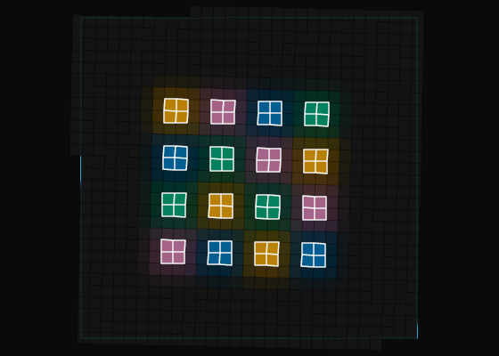
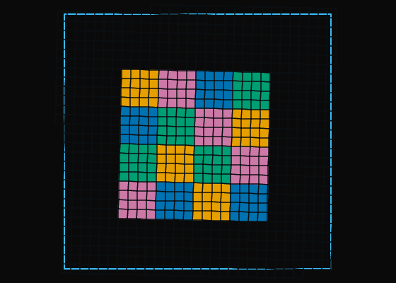
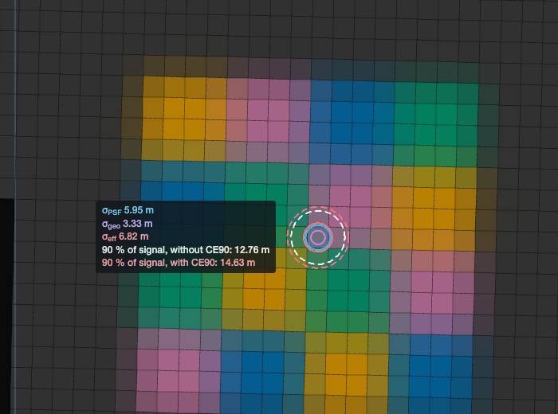
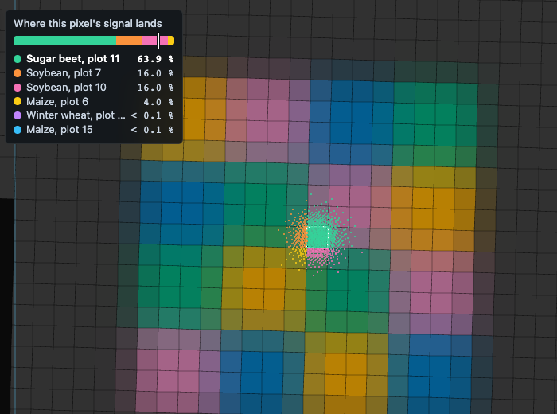
How a pixel is read
The model is the one of the PHENET note Plot size and effective blur.
- A pixel's value is a weighted mean of the ground around its centre. The weight is a Gaussian spot centred on the pixel's centre: the point spread function (PSF), of standard deviation σPSF along each axis.
- The spot is given by its full width at half maximum: FWHM = 2.3548 σPSF. r = FWHM / GSD compares it with the pixel: at r = 1 the spot fits in one pixel, above 1 it spills into the neighbours. 95 % of the signal falls in a spot 4.9 σPSF across.
- In the Satellite fold σPSF is typed in pixels, along x and along y. The line under it gives the FWHM in metres, the ratio r, and whether the satellite's own figure is measured or from the published MTF.
- No pixel square is added to the spot. A FWHM measured on images already contains the detector's footprint, the motion blur and what is left of the atmosphere.
- The spot is never narrower than the pixel's own footprint, GSD / √12: no end-to-end blur can be. A blur typed in below that width is simulated at that width. Only a blur of exactly 0 gives a plain square pixel.
For every pixel the designer works out, from the plots' outlines, the share of the spot that falls on each cover: each plot or strip, the bare soil of the alleys, and the ground outside the trial.
Purity and its threshold
A pixel's purity is the share of its signal that comes from its dominant plot. Its contamination is the rest. A pixel is pure when its contamination is at most ε: at least 90 % of one cover at the default threshold.
- The threshold is set under Noise & purity threshold, or in Suggest a design: it is one figure for the whole page. Default 90 % (ε = 10 %), the note's value. The note uses 5 % as a stricter case.
- It goes from 50 to 99 %. 100 % is not offered: a Gaussian never reaches zero, so no pixel would ever be pure.
- A share of pure pixels is given over the pixels of crop the design plants. Pixels of nothing but alley soil are counted apart and not held against the design.
Geolocation error (CE90)
An image never lands exactly where its coordinates say. Providers give this as a CE90: the radius of the circle that contains 90 % of the errors. Per axis, σgeo = CE90 / 2.146. A CE90 of 0 means no error.
The CE90 is set in the Satellite fold, in one of three ways.
- Default
- A third of a pixel: σgeo = GSD / 3, so CE90 = 0.715 GSD. It is the note's figure when nothing is known, which it calls typical of a well-registered product. Every Sentinel-2 band takes a third of the 10 m pixel, since the 20 m and 60 m bands are the same instrument, registered with the 10 m ones.
- As delivered (Use)
- Every satellite takes the figure its own provider states for an image with no ground control: this one in the fold, and each row of the satellites table at its own. The figures are in the satellites table. They apply to one image read where it was delivered. Images registered to each other, or to ground control, land much closer.
- A value typed
- The same CE90 for every satellite.
The default is optimistic for the 0.4 to 0.5 m pansharpened products: the note measured about 1 m between images.
The effective blur
σeff = √(σPSF² + σgeo²) merges the blur and the geolocation error into one. The note's closed forms use it, and so does the "average image" column of Plot size required. The simulation does not blur the geolocation error in: it counts the pixels that hold within the CE90.
Pixels that hold within the CE90
A pixel chosen by its coordinates must stay pure for the same plot wherever the image lands. A pixel holds when it is pure for one plot with the image in place, and still pure for that plot with the image pushed by the CE90 in each of eight directions: four square to the plot's borders and four towards its corners.
- A pixel 10 m from a border can be pure and not hold.
- When the CE90 is at least half the short side of a plot or a strip, nothing can hold: the count is 0.
- The satellites table shows this share in its CE90 column, the map as the solid outlines of the Pure pixels layer.
- The eight directions follow the plots: for a trial turned on the grid they turn with it.
- An imported trial has no one plot width: the half-side rule is not applied to it. With more than 253 plots it is also tried on a second ring of eight, at half the CE90.
- This test is the designer's own. The note sizes a plot by its 204 placements of the grid instead: see Minimum plot, by the note.
The satellites and their figures
Each satellite brings its pixel size and its blur. Both can be edited for the satellite selected. A Custom sensor takes any pixel size, with a default blur of σ = 0.55 px and no provider's CE90.
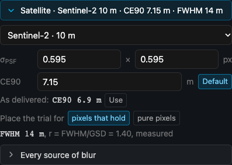
| Satellite | Pixel | FWHM | r | Blur from | CE90, default | CE90, as delivered | Provider's statement |
|---|---|---|---|---|---|---|---|
| Fixed grid, read live from the catalog | |||||||
| Sentinel-2 (B02, B03, B04, B08) | 10 m | 14 m | 1.40 | measured | 7.15 m | 6.9 m | better than 8 m for 95.5 % of products (ESA, quoted by CESBIO) |
| Sentinel-2 (B05 to B07, B8A, B11, B12) | 20 m | 29.2 m | 1.46 | published MTF | 7.15 m | 6.9 m | as the 10 m bands |
| Sentinel-2 (B01, B09, B10) | 60 m | 87.6 m | 1.46 | published MTF | 7.15 m | 6.9 m | as the 10 m bands |
| Landsat · HLS (shared grid with Sentinel-2) | 30 m | 38.9 m | 1.30 | published MTF | 21.5 m | 18.2 m | Tier 1 scenes: 12 m RMSE or better (USGS) |
| Landsat C2 (native grid, half a pixel off Sentinel-2's) | 30 m | 38.9 m | 1.30 | published MTF | 21.5 m | 18.2 m | as HLS |
| Commercial, tasked: the grid falls where the image does | |||||||
| WorldView-2 · native MS | 1.6 m | 1.9 m | 1.19 | measured | 1.14 m | 3.5 m | under 3.5 m CE90 without ground control (DigitalGlobe) |
| WorldView-2 · pansharpened | 0.4 m | 1.1 m | 2.75 | measured | 0.286 m | 3.5 m | as the native bands |
| Pléiades · native MS | 2 m | 5 m | 2.50 | measured | 1.43 m | 8.5 m | under 8.5 m CE90 at 30 degrees without ground control (Airbus DS, 2016) |
| Pléiades · pansharpened | 0.5 m | 3 m | 6.00 | measured | 0.358 m | 8.5 m | as the native bands |
| SkySat · pansharpened | 0.5 m | 0.73 m | 1.46 | published MTF | 0.358 m | 15.2 m | ortho products: less than 10 m RMSE (Planet, 2018) |
| SPOT 6/7 · pansharpened | 1.5 m | 2.12 m | 1.41 | published MTF | 1.07 m | 15 m | under 15 m CE90 at 30 degrees without ground control (Airbus DS, 2016) |
| PlanetScope | 3 m | 9.7 m | 3.23 | measured | 2.15 m | 15.2 m | ortho products: less than 10 m RMSE (Planet, 2018) |
A provider's figure in another measure is converted to a CE90 for a circular normal error: a radial RMSE times 1.517, a radius holding 95.5 % of the errors times 0.862.
Where a blur comes from
- Measured
- A FWHM fitted on real images of the PHENET trials at Mauguio and Toulouse, in the NIR band, by blurring a very-high-resolution reference of the same scene onto the sensor's grid. It describes the product as delivered. These are the figures to trust, and they are the note's. The blur of every other satellite of the table comes from a published figure, not from the note.
- Published MTF
- σ = √(−2 ln M) / π pixels, from the sensor's modulation transfer function at the Nyquist frequency, M, taking the blurriest end of each published range. It describes the instrument. For the tasked sensors the measured blur is two to four times wider than this.
Pansharpened products
- WorldView-2 and Pléiades pansharpened. Size a trial on the native row of the same satellite. The default geolocation error, a third of the pansharpened pixel, is also too kind here: the note measured about 1 m between images.
- SkySat and SPOT 6/7 pansharpened. No blur was measured for their native bands (about 1 m for SkySat, 6 m for SPOT), and the list has no native row for them. Their row flatters a trial read through an index.
Fixed grid or tasked
Where the pixel grid falls on the plots changes how many pixels are pure. Whether that position can be chosen depends on the satellite.
- Fixed grid
- Sentinel-2 and Landsat deliver every image on the same grid, read live from the catalog. The trial can be planted on it, so it is counted at the position on the grid that keeps the most pixels.
- Tasked
- Each image comes on a grid of its own, which cannot be known when the trial is planted. The trial is counted at the position on that grid that keeps the fewest pixels. This is the rule in the satellites table, in the suggestions and on the map, where strips or a block trial are drawn at that position.
The pixels counted are those that hold within the CE90, or the pure ones: see Place the trial for.
- Strips and checkerboards are slid over one pixel. A block trial along the pixel rows, or a quarter turn from them, is tried at 24 positions a side (at up to 6 with no blur at all, or a threshold of 50 %). At another angle its plot edges cannot run along the pixels: on a fixed grid it is counted where it sits, and on a tasked one it is tried at up to 6 positions a side for the worst.
- An imported trial stays on the map where its file has it, unless it is turned onto the pixel rows: it is then placed on the grid like the others. In the table, on a tasked satellite's row, it is counted at its worst shift on the grid.
- In a "vs best" comparison only the angle of a tasked satellite's trial can be chosen: it is the angle whose worst position keeps the most.
- The grid drawn for a tasked satellite is a grid to ask the provider for, or to resample onto. The counts do not rely on getting it.
Place the trial for
Wherever the designer chooses a trial's position on the pixel grid (strips slid along it, a block trial staked, an imported trial's best placement, a design suggested), the two buttons of the Satellite fold say which position it looks for.
- Pixels that hold
- The most pixels that stay pure wherever the image lands within the CE90. The default.
- Pure pixels
- The most pure pixels with the image exactly in place.
They are not the same position: the figure under Pixels that hold shows both for one plot. With no geolocation error the two are one, and the buttons are off. When the CE90 is at least half the short side of a plot, no pixel can hold and the trial is placed for pure pixels. For a tasked satellite it is the position that keeps the fewest, of the same count.
Designs
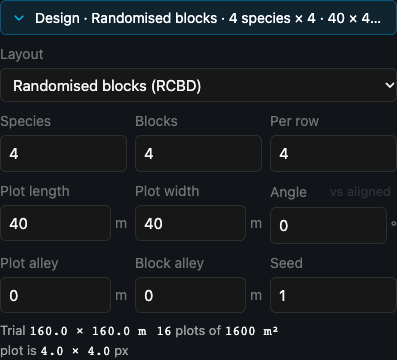
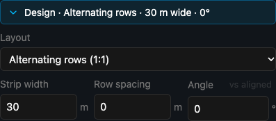
- Alternating rows or columns
- Two crops in strips. Strip width, and Row spacing: bare soil between strips. Bare soil is drawn in brown, here and in every alley.
- Checkerboard
- Square cells of two crops. The strip width is the cell's side.
- Randomised blocks (RCBD)
- 2 to 8 species in 1 to 20 blocks. Every block holds each species once, in a random order that never puts a species beside itself in the next block. Per row: how many blocks sit side by side before the next row starts; a row runs across the plots, so more per row makes the trial wider and shorter. Plot length and width, Plot alley (between plots of a block), Block alley, and Seed: the same seed replays the same layout. With two species the only layout that keeps them apart is a checkerboard, so the seed only picks which one starts.
- Imported trial
- The plots of a file: see Imported trial.
Angle is counted from the pixel rows, anticlockwise from east: 0 runs along them. vs aligned compares the design with the same design along the pixel rows, satellite by satellite.
Imported trial
- Files. A zipped shapefile, the shapefile's parts selected together (.shp, .dbf, .prj, and .cpg when the text is not UTF-8), GeoJSON, KML or KMZ. Up to 50 MB and 5000 plots. The plots must be drawn as polygons.
- Coordinate system. Read from the .prj, or from the GeoJSON's crs member. Systems on WGS84 or ETRS89 are read directly, and a number of national datums through their published shift to WGS84, with the accuracy stated on import. When a system cannot be read the import says so: export the layer in WGS84 (EPSG:4326).
- Variety column. Each distinct value is a species, with its own curve, colour and purity count. Plots sharing a value are its repetitions. At most 252 varieties. The attribute table shows the file's values: click a column to use it.
- More than 253 plots. The simulation cannot tell that many plots apart one by one. They are then counted by variety: a pixel spanning two plots of the same variety counts as pure.
- The area. The area measured becomes the trial's outline, not the field drawn. Remove puts the field back.
- Angle. The file draws the trial at its own angle. Changing it turns the whole trial about its centre; 0 lines the plots up with the pixel rows. as in file returns to the file's angle.
Best placement
vs best compares the trial as drawn with the same trial at the angle and position that keep the most pure pixels, searched for each satellite on its own, so the angle changes from one row to the next. Clicking a row's figures for the best placement puts the trial there on the map; clicking its figures as drawn only selects the satellite. A dot in the angle column means no placement was searched at that size (too many pixels): the trial is as the file has it.
It is a search, with a budget: it tries a limited number of angles and positions, and the best it reports is the best it found. On a fixed grid the trial turned onto the pixel rows is always among them, with its edge on a pixel edge and through the middle of a pixel.
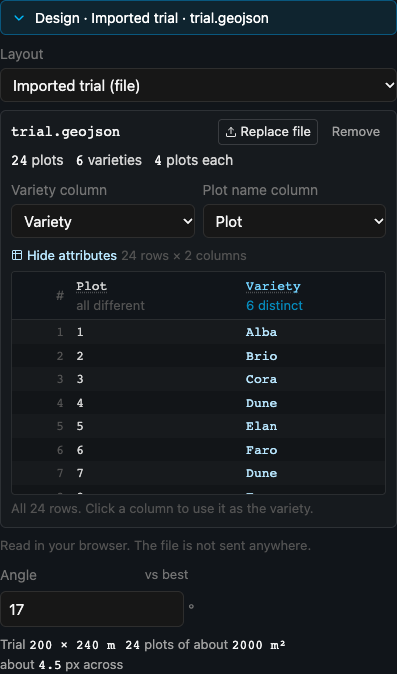
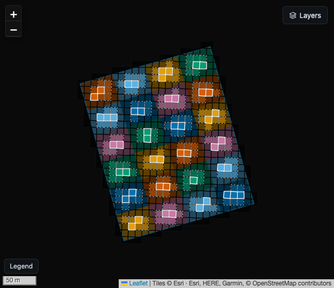
Suggest a design
Say what the trial has to hold, and Build makes the smallest trial that holds it. The trial is sized for the pixels and the blur of the satellite chosen in the fold, and Build makes that satellite the page's. The one marked (now) is the page's satellite before the build.
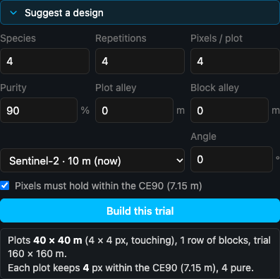
- Randomised blocks
- Species (the treatments of a block), Repetitions (blocks, each holding every species once), and Pixels per plot: the fewest pixels every plot must keep, the same figure as the row of Plot size required that can be typed. Plot alley and Block alley are 0 by default: an alley takes ground and gives no pixel. With several rows of blocks the block alley is widened, if need be, to differ from the plot alley by whole pixels.
- Rows or columns
- Pixels per strip: the fewest pure pixels every strip must keep over its whole length, which is its pixels across times its length in pixels. The strips built are the thinnest that keep a pixel across, widened only where the field's strips are too short to hold the count.
- Checkerboard
- Pixels per cell.
- Purity
- The page's own threshold: changing it here changes it everywhere.
- Angle
- At 0 the trial lies along the pixel rows: plots of whole pixels all keep the same count, and the trial is the smallest there is. Turned, each plot lies its own way across the pixels and the worst-placed one sets the size, so the plots come out larger. Strips turned cross the pixels obliquely, and the pixels across are a mean along the strip; for a checkerboard turned, the count is the mean over the cells.
- Pixels must hold within the CE90
- Ticked, a pixel counts only if it holds. Unticked, the pixels pure with the image exactly in place are counted.
With no area, or one too small, the build makes an area around the trial. Plots are searched up to 1000 m; for a trial turned from the pixel rows, up to 14 pixels more than the size found along them.
Plot size required
The smallest plot, of the same shape as the design's, that keeps a given number of pure pixels wherever the pixel grid falls. Every side is counted with its own distance: the share kept is the share kept across the width times the share kept along the length. Whatever lies outside the plot counts as outside, a neighbouring plot or an alley alike. Click a size to set the design to it.
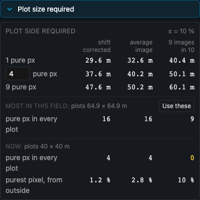
With a geolocation error the card has three columns, which are three ways of reading it.
- Shift corrected
- Each image is put back in place before its pixels are read (co-registration). Only the blur is left: σPSF, with no shift.
- Average image
- The note's reading: blur and shift merged in σeff. Right for a mean over many images. In one image a pixel can take more from its neighbours, or less.
- 9 images in 10
- The same pixels stay pure in 9 images out of 10: blur σPSF, with the image anywhere within its CE90. The reading a list of pixels chosen by their coordinates needs.
- Most in this field
- For a block trial: the largest plots, of the design's shape, with which the trial still fits inside the area, a pixel clear of its edge, in the arrangement of blocks that lets them grow the most. More needs a larger area, fewer plots or another plot shape.
- Now: pure px in every plot
- The fewest pure pixels in a plot, over every placement of the pixel grid. A trial has many plots and each sits differently on the grid, so this is what every plot can count on.
- Now: purest pixel, from outside
- The share of its signal that the purest pixel takes from outside its plot, at the grid placement that is worst for it. A plot holds a pure pixel once this is at most ε.
For strips the rows count pixels across a strip.
Growth curves and noise
Each species has an NDVI curve over the season, picked from the crop presets or edited: a double logistic with a peak (L1), a green-up day and rate (x01, k1), a senescence day and rate (x02, k2) and a switch day (tc). A pixel's series is the mix of the curves of what it sees, in the shares worked out above. On the season chart the dashed line is what a mixed pixel records, and the grey band is the noise (±σ).
Noise is added to each pixel's series. mag is its peak variance, in NDVI squared. α and β shape when in the season it peaks, as a Beta curve: at α = β = 2 it peaks mid-season.
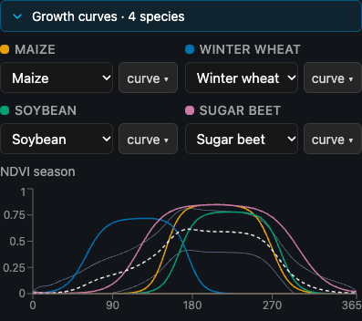
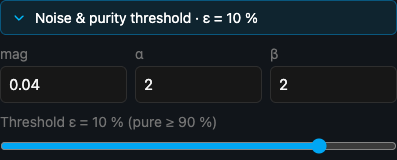
Every source of blur
The Satellite fold lists each term at the page's current setting, in the note's symbols, under Every source of blur. A figure in amber is one the design's plot does not meet: no pure core, a plot shorter than the closed form's side or than the central pixel's, a pixel larger than the ceiling, a centred pixel over the threshold, or random placements that do not always leave a pure pixel.
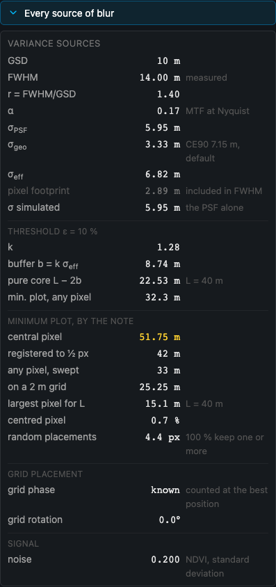
- GSD
- Ground sampling distance: the size of a pixel on the ground.
- FWHM
- Full width at half maximum of the PSF, 2.3548 σPSF. Marked measured, or published MTF.
- r = FWHM / GSD
- The blur spot compared with the pixel.
- α
- Share of contrast kept at the Nyquist frequency of the pixel grid, α = exp(−0.890 r²). Sentinel-2 is specified at 0.15 to 0.30. A small α means the optics, not the pixel, limit the resolution.
- σPSF, σgeo, σeff
- See How a pixel is read and Geolocation error.
- Pixel footprint
- Blur from integrating the signal over one pixel, GSD / √12. A measured FWHM already contains it, so it is added neither to σeff nor to the simulation.
- σ simulated
- The blur each pixel is read with: σPSF, or the pixel's footprint when the blur typed is narrower.
- k
- k = Q⁻¹(ε), Q being the upper tail of the normal law: 1.28 at 10 %, 1.64 at 5 %.
- Buffer b = k σeff
- A pixel is pure only if its centre lies at least b inside the plot's edge.
- Pure core L − 2b
- The zone of the plot where pure pixels can lie: the plot side L less a buffer along each edge.
- Min. plot, any pixel
- The note's closed form for a square plot: the smallest side that keeps at least one pure pixel whatever the grid placement, L ≈ GSD + 2 z σeff, with z = Q⁻¹(1 − √(1 − ε)). It counts the nearest border on each side only. Plot size required counts the opposite border too, for any plot shape, and asks for a little more.
- Grid phase
- Known for a fixed grid, unknown for a tasked sensor: see Fixed grid or tasked.
- Grid rotation
- The angle between the plot rows and the pixel grid.
- Noise
- Standard deviation of the noise added to each pixel's NDVI series, at its peak.
Minimum plot, by the note
The note's own figures for the sensor, for a square plot and whatever the trial drawn. They are the smallest side at which a pixel stays pure in the worst of the note's 204 placements of the grid: a shift of up to one pixel, four directions, three positions of the grid, four rotations. Sides are tried a quarter of a metre apart.
- Central pixel
- The pixel the plot's coordinates name must stay pure, wherever the image lands within one pixel. The conservative figure, and the one the note sizes a tasked sensor by.
- Registered to ½ px
- The same, with the images registered to each other within half a pixel: the note's realistic registration.
- Any pixel, swept
- At least one pixel, whichever it is, stays pure in every placement. The closed form above is its approximation.
- On a 2 m grid
- Central pixel, with the sensor's blur resampled onto 2 m pixels and its geolocation error the same share of a pixel (2/3 m by default). What is left once the pixel size is the same for every sensor: the optics alone.
- Largest pixel for L
- The note's hard ceiling. With this ratio of blur to pixel, the largest pixel at which even a pixel exactly on the plot's centre is pure: GSD = L / (2 c zc), with c = σeff / GSD and zc = Q⁻¹((1 − √(1 − ε)) / 2), 1.95 at 10 %. This is not the z of the closed form above: a centred pixel has a border on both sides. A sensor with larger pixels cannot follow the plot at any position.
- Centred pixel
- Contamination of a pixel sitting exactly on the centre of a square plot of side L: the best a pixel of the plot can do.
- Random placements
- The grid dropped at random on a square plot of side L, at any position and rotation: the mean number of pure pixels, and how often at least one is left.
What is not simulated
- Per-band FWHM
- The FWHM differs between bands (PlanetScope: 9.7 to 12 m). One value is used for all bands.
- Heavier tails
- A real PSF has heavier tails than a Gaussian (adjacency effect), which adds contamination far from an edge.
- Variance between replicates
- Two replicates of the same variety differ, by about 0.17 LAI at the peak at Toulouse. Here every plot of a variety has the same curve.
- Other grid rotations
- The note keeps the worst case over four grid rotations. Only the rotation drawn is simulated.
The chart
Each dot is a pixel of the trial, placed by a principal component analysis of the pixels' NDVI series over the season. Pure pixels of one species gather; mixed pixels spread between them.
- Scatter
- The first two axes. Lasso selects pixels on the chart, which are highlighted on the map.
- Variance
- The variance carried by each axis.
- Loadings
- How each time step of the season weighs in the components.
- Purity
- The pure pixels of each species, the pixels of pure bare soil and the mixed ones. The share at the bottom is over the pixels of crop the design plants, then over all the trial's pixels once alleys and edges are counted.
On a field too fine to draw every pixel, the chart is computed on a sample, and says so.
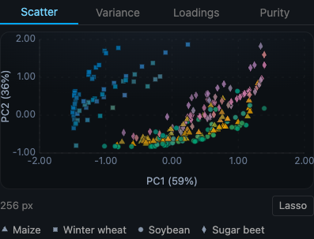
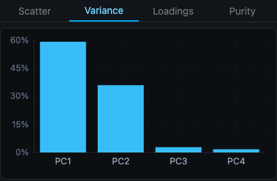
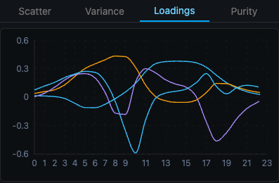
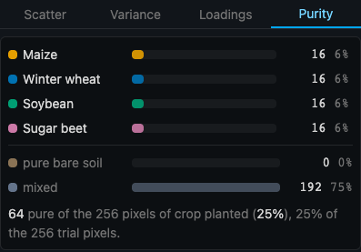
Across satellites
The same trial read by every satellite of the list, each at its own pixel size, blur and CE90. The satellite selected is taken as it stands on the page. Click a row to select that satellite: the map then shows the field as it sees it.
- pure
- Pure pixels, as a share of the pixels of crop the design plants. Green from 70 %, amber from 40 %, red below.
- CE90
- The share that holds within the CE90 of that satellite.
- per plot
- The fewest pure pixels in a plot, counted over the pixels that hold when a geolocation error is set. In red, how many plots have none.
- angle
- In a "vs best" comparison, the angle to the pixel rows of the best placement for that satellite.
- ◦
- Sampled over the central part of a large field.
A fixed-grid satellite is counted at the best position on its grid, a tasked one at the worst: see Fixed grid or tasked. Hovering a row gives its counts.
In a comparison (vs aligned, vs best) each satellite has two groups of figures: the design as drawn and the other placement. Both shares are over the same crop planted, so they compare directly. The Charts view shows one small PCA per satellite in place of the table.
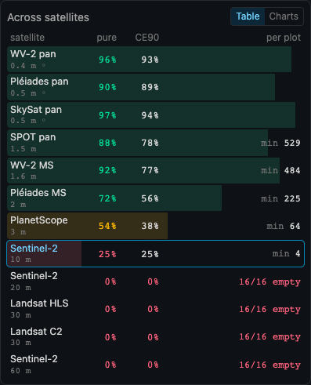
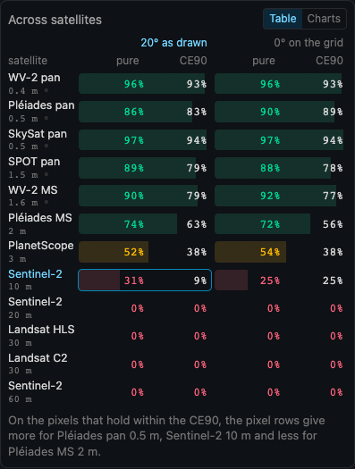
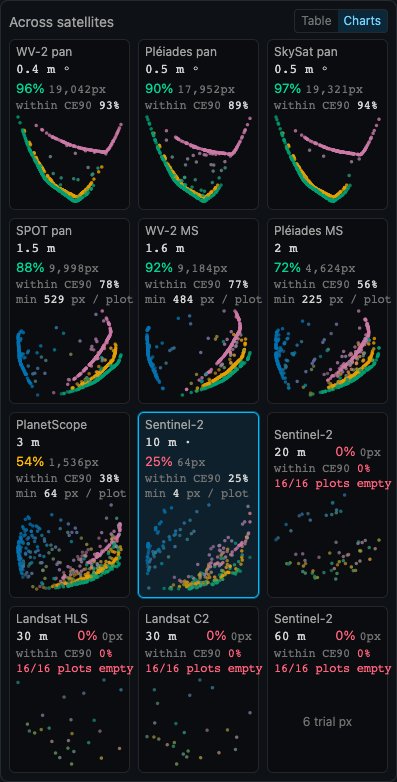
Examples
Six questions put to the designer. Every number and every drawing below is computed by its engine when this page is built, at a purity threshold of 90 % and the default geolocation error unless the example says otherwise.
1. Four varieties, to be followed with Sentinel-2
Four varieties, four repetitions, in randomised blocks. The trial is to be followed through the season with Sentinel-2's 10 m bands, whose images are free and frequent. How large must the plots be, and what would the other satellites make of the same trial?
1. The usual micro-plots
Start from the design the page opens with: micro-plots of 8 × 2 m, 4 species in 4 blocks. Under Across satellites, no satellite keeps a single pure pixel of the 16 plots, the pansharpened products apart: WorldView-2 pansharpened has 32 % of the crop in pure pixels and holds a pixel in 8 of the 16 plots; SkySat pansharpened has 44 % of the crop in pure pixels and holds none of them. A pansharpened row flatters a trial read through an index, and no other satellite sees these plots at all.
2. What Sentinel-2 asks of a plot
Plot size required, for a square plot, gives the side that keeps a number of pure pixels wherever the pixel grid falls, in three readings of the geolocation error (CE90 7.15 m).
| Pure pixels in the plot | shift corrected | average image | 9 images in 10 |
|---|---|---|---|
| 1 | 29.6 m | 32.6 m | 40.4 m |
| 4 | 37.6 m | 40.2 m | 50.1 m |
| 9 | 47.6 m | 50.2 m | 60.1 m |
One pure pixel already asks for a plot of 29.6 m, three pixels wide, and a pixel that can be named by its coordinates for one of 40.4 m.
3. A trial built for it
In Suggest a design: 4 species, 4 repetitions, 4 pixels per plot, Sentinel-2, with Pixels must hold within the CE90 ticked. Build gives plots of 40 × 40 m (4 × 4 pixels, touching), one row of blocks, and a trial of 160 × 160 m, 2.56 ha. Each plot keeps 4 pixels within the CE90.
That is less than the 50.1 m of the table's last column for 4 pixels. The table is for a grid that falls anywhere. Sentinel-2's grid is fixed, so the plots are laid on it, their edges on pixel edges, where a 40 m plot holds the most pixels (the figure under Pixels that hold).
It is the smallest plot of whole pixels that does, with little to spare: at the worst landing of the image its pixels keep 90.1 % of their signal, for 90 % asked. Staked 0.5 m off along one side, a plot keeps 2 of its 4 pixels. A larger plot, or images registered to each other, give the margin a field needs.
4. The same trial, by every satellite
| Satellite | Pixel | pure | CE90 | per plot |
|---|---|---|---|---|
| WV-2 pan | 0.4 m ◦ | 96 % | 93 % | |
| Pléiades pan | 0.5 m ◦ | 90 % | 89 % | |
| SkySat pan | 0.5 m ◦ | 97 % | 94 % | |
| SPOT pan | 1.5 m | 88 % | 78 % | min 529 |
| WV-2 MS | 1.6 m | 92 % | 77 % | min 484 |
| Pléiades MS | 2 m | 72 % | 56 % | min 225 |
| PlanetScope | 3 m | 54 % | 38 % | min 64 |
| Sentinel-2 | 10 m | 25 % | 25 % | min 4 |
| Sentinel-2 | 20 m | 0 % | 0 % | 16/16 empty |
| Landsat HLS | 30 m | 0 % | 0 % | 16/16 empty |
| Landsat C2 | 30 m | 0 % | 0 % | 16/16 empty |
| Sentinel-2 | 60 m | 0 % | 0 % | 16/16 empty |
◦: counted over the central part of the trial, which has too many pixels of that size to count them all, so with no count per plot.
Sentinel-2's 10 m bands keep 64 pure pixels, 25 % of the crop planted, 4 in every plot, and all of them hold. Its 20 m and 60 m bands and Landsat keep none: a 40 m plot is too small for them. The finer satellites keep more, each counted at the worst position on its own grid: PlanetScope has 54 % of the crop in pure pixels and 38 % in pixels that hold.
5. Turned by 20°
A field's rows rarely run along the pixel rows. Turned by 20°, the plots' edges can no longer lie on pixel edges, and the trial is counted where it sits. It keeps more pure Sentinel-2 pixels, 80 against 64, but only 24 of them hold: 1 in the worst plot, against 4.
6. Images as delivered
With every satellite held against its own provider's figure (Use, in the Satellite fold), Sentinel-2 is held against 6.9 m, close to the default, and the same 64 pixels hold. PlanetScope, at 15.2 m, keeps none that holds. Its 1,424 pure pixels cannot be named by their coordinates from one image to the next, unless the images are first registered to each other.
What the example shows
- A plot must be several pixels wide before one pixel of it is pure: 40 m for 4 Sentinel-2 pixels that hold, and that with no margin.
- On a fixed grid, make the plots a whole number of pixels, along the pixel rows, and let the designer place them on the grid.
- A pure pixel is not always one that holds: read the CE90 column, not only the pure one.
- A finer satellite is not a safer one by itself: its grid falls anywhere, and its images land metres away as delivered.
2. Two crops in strips
Two crops in alternating rows, to be told apart by Sentinel-2. In the Design fold the layout is Alternating rows; in Suggest a design, ask for 10 pixels per strip that hold within the CE90.
Build gives strips of 30 m, 3 pixels wide. A strip keeps 1 pixel across that holds, so it needs 130 m of length for its 10 pixels: 10 pixels, and the ends of a strip, which lose pixels as its sides do. The same request for PlanetScope gives strips of 18 m, 6 pixels wide, over 48 m.
Which of the two positions the designer takes is the choice of Place the trial for. Three pixels wide is the least that holds for Sentinel-2: a strip two pixels wide keeps a pure row only with a pixel within 1.3 m of its middle (90.7 % at best), and that row does not hold.
3. Which satellite for which plot
The same trial, 4 species in 4 blocks, asked of six satellites in Suggest a design: the smallest plots that keep 1, 4 or 9 pixels that hold within each satellite's default CE90.
| Satellite | 1 px per plot | 4 px per plot | 9 px per plot | trial, 4 px |
|---|---|---|---|---|
| WorldView-2 native MS 1.6 m | 6.4 × 6.4 m | 8 × 8 m | 9.6 × 9.6 m | 0.10 ha |
| Pléiades native MS 2 m | 12 × 12 m | 14 × 14 m | 16 × 16 m | 0.31 ha |
| PlanetScope 3 m | 21 × 21 m | 21 × 27 m | 21 × 33 m | 0.91 ha |
| Sentinel-2 10 m | 30 × 40 m | 40 × 40 m | 50 × 50 m | 2.56 ha |
| Sentinel-2 20 m | 60 × 60 m | 80 × 80 m | 100 × 100 m | 10.2 ha |
| Landsat HLS 30 m | 90 × 90 m | 120 × 120 m | 150 × 150 m | 23.0 ha |
The plot grows with the pixel and with the blur. Four pixels per plot cost 0.10 ha with WorldView-2 native MS, 2.56 ha with Sentinel-2's 10 m bands and 23.0 ha with Landsat (HLS). The figure under Suggest a design draws four of these trials at one scale.
4. A trial that already exists
A trial that is already in the ground: 24 plots of 50 × 40 m, 6 varieties in 4 repetitions, drawn at 17° to the pixel rows. Its plots are imported as a file (a made-up one here), with the Variety column as the variety, and vs best compares the trial as drawn with its best placement for each satellite.
| Satellite | Pixel | as drawn | plots | best | plots | angle |
|---|---|---|---|---|---|---|
| WV-2 MS | 1.6 m ◦ | 15,446 · 13,858 | 16,130 · 14,572 | 87° | ||
| Pléiades MS | 2 m ◦ | 9,206 · 7,911 | 8,976 · 8,040 | 24 of 24 | 0° | |
| PlanetScope | 3 m | 3,027 · 2,323 | 24 of 24 | 3,023 · 2,341 | 24 of 24 | 13° |
| Sentinel-2 | 10 m | 193 · 50 | 24 of 24 | 144 · 144 | 24 of 24 | 0° |
| Sentinel-2 | 20 m | 0 · 0 | 0 of 24 | 0 · 0 | 0 of 24 | 17° |
as drawn, best: the pure pixels, then those that hold (the designer's own table gives them as shares). plots: the plots that keep a pixel that holds. angle: that of the best placement. ◦: counted over the central part of the trial, with no count per plot.
For Sentinel-2 the placement matters most: as drawn 50 pixels hold, 1 in the worst plot; turned to 0° and moved onto the grid, 144 hold, 6 in every plot. For PlanetScope the placement changes little, and every plot keeps at least 94 pixels that hold.
A trial that exists cannot be turned. The comparison says what its layout cost, and which satellites can still follow it as it is. The best placement is the best the search found: see Imported trial.
5. How strict, and how sure
The trial of the first example, 40 × 40 m plots, under three purity thresholds and the three ways of setting the geolocation error. Each cell gives the pure pixels, then those that hold.
| no error | default | as delivered | |
|---|---|---|---|
| Sentinel-2, 10 m | |||
| purity 80 % | 144 | 144 · 64 | 144 · 64 |
| purity 90 % | 144 | 64 · 64 | 64 · 64 |
| purity 95 % | 80 | 80 · 16 | 80 · 16 |
| PlanetScope, 3 m | |||
| purity 80 % | 1,870 | 1,918 · 1,365 | 1,872 · 4 |
| purity 90 % | 1,424 | 1,536 · 1,076 | 1,424 · 0 |
| purity 95 % | 1,142 | 1,244 · 834 | 1,142 · 0 |
At 90 % and the default error Sentinel-2 holds 64 pixels; at 95 % it holds 16. It counts more pure pixels at 95 % (80) than at 90 % (64): the trial is placed for the pixels that hold, and the position that holds the most at 95 % is another one. PlanetScope holds 1,076 at the default error and 0 as delivered; as delivered it holds next to nothing at any threshold.
A count means nothing without the two settings it was made under: say both when a design is reported.
6. A checkerboard
Two crops in a checkerboard, each cell a plot. With the layout Checkerboard, Suggest a design asked for 4 pixels per cell gives cells of 40 m for Sentinel-2 and of 21.75 m for PlanetScope.
A cell touches cells of the other crop on its four sides, so it is read like a plot among other plots: each crop has as many repetitions as half the cells, and each cell must be as large as a plot.
What stays in the browser
- The field, the design and every setting are kept in this browser's storage and come back on a refresh. A trial too large to keep is loaded for the session only, and the page says so.
- A trial file is read in the browser. It is not sent anywhere.
- The designer contacts outside services for the map tiles, the place search, its fonts (Google Fonts) and, for a fixed-grid satellite, the public catalog its grid is read from (Microsoft Planetary Computer, or Element 84 Earth Search). This page fetches nothing.
Sources
- PHENET note, Plot size and effective blur: the model, the default geolocation error, the measured FWHM and the minimum-plot figures. The note is not published.
- Published MTF figures and providers' geolocation statements: linked in the satellites table.